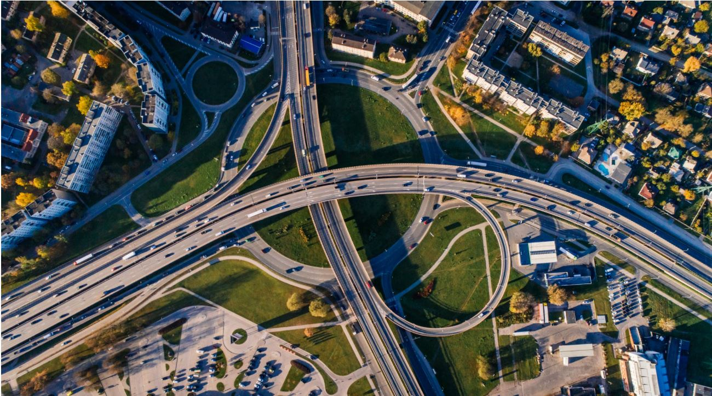

Internet protocol (IP) is the rulebook by which the internet is formed. In order for computers to talk with each other they need a common language, or protocol, by which to communicate. Back in the 1970’s there was no such protocol for the internet until Vint Cerf and Bob Khan developed what they called the internetworking protocol in 1974. This laid the ground work for what we know today as the internet. Today, the latest popular internet protocol is Internet Protocol Version 6 (IPv6) which is the successor of IPv4. The biggest difference between IPv6 and IPv4 is the size of the address. IPv6 uses a 128 bit address versus IPv4’s 32 bit. This allows 3.4x10^38 possible addresses which is important since IPv4 only has a measly 3.4 billion addresses which will eventually be constraining.
So what is an IP address? It is a number, for example 141.72.251.38, which is similar in function to a telephone number or street address, except it represents a device on the internet. 141.72.251.38 is a 32 bit IPv4 address. IPv6 uses much longer addresses like 3FFE:F200:0234:AB00:0123:4567:8901:ABCD for example which is 128 bits. These 2 protocols set the standard by which internet devices are identified to each other.
Now that we know how computers identify each other, how do they send information? The information is sent in IP packets. A packet can be thought of as a standard sized package of data. IPv4 and IPv6 have standard formats for their packets. They both contain the source and destination IP addresses along with the data to be transferred. There is a limit to the size of a packet so in order to send a large file from one computer to another, it must be broken down. If you send a selfie from your phone to a friend’s phone, your phone will break down the selfie into IP packets, the packets get sent over the internet then received and reconstructed on your friend’s phone.
Now how are the packets routed? The speed by which we can send information from one computer to another over the internet may lead you to believe that it is a direct route, however that is not the case. The internet is a complicated network, you can think of it like road system. Most car trips aren’t a direct route and involve making many turns. There is also a number of different possible routes for most trips. This is the same with the internet. Before a data packet gets to its destination, it is passed through a series of routers. Routers act like traffic managers, they direct where each data packet goes next. If a route is congested, a router may direct packets to a less congested route. What makes the modern internet so reliable is the amount of available routes for a packet to take. If a route is not available, there are usually many alternate routes to take and the packets continue to their destination.
